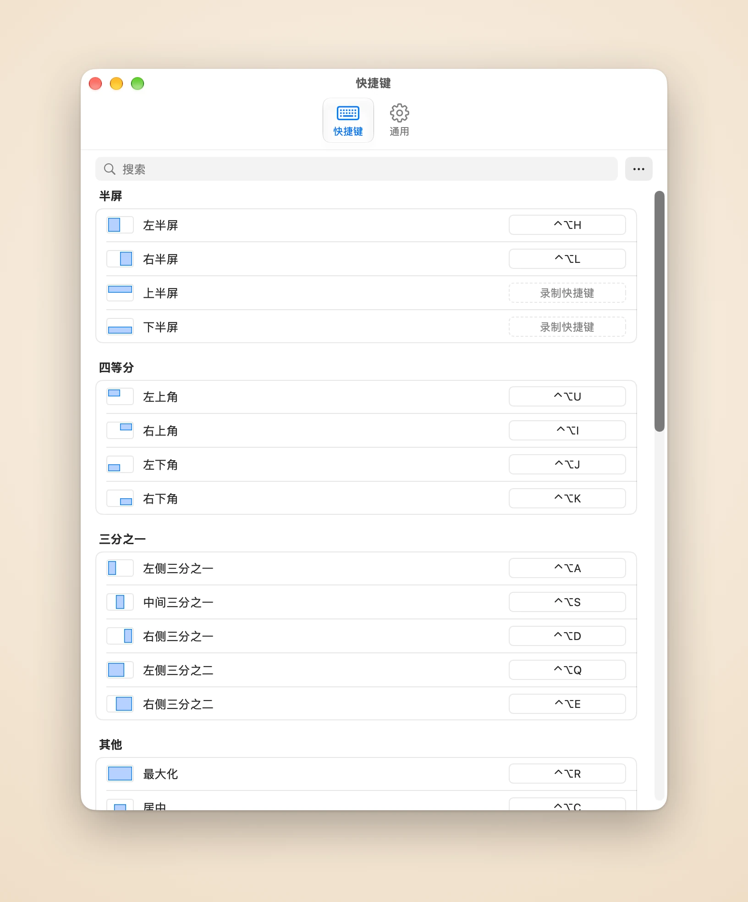

一键铺开你正在用的窗口
Piccolo记得你最近用过哪些窗口。一个快捷键，就能把最近的两个、三个或六个窗口在当前显示器上并排或排成网格，不用再一个个挑。
Piccolo记得你最近用过哪些窗口。一个快捷键，就能把最近的两个、三个或六个窗口在当前显示器上并排或排成网格，不用再一个个挑。
Piccolo排好一组窗口后，用快捷键移动当前窗口旁的分隔线，相邻窗口会跟着变，不留空隙也不重叠。交换窗口能让两个窗口互换位置，布局保持不变。
按住快捷键，高亮框会显示窗口将去的位置。松手就移过去，按Esc则什么都不变。
再按一次变成2/3，再按变成1/3
⌃⌥H ⌃⌥L
每个角各一个键
⌃⌥U ⌃⌥I ⌃⌥J ⌃⌥K
宽屏上的三栏布局
⌃⌥A ⌃⌥S ⌃⌥D
给主窗口留足空间
⌃⌥Q ⌃⌥E
铺满整个屏幕
⌃⌥R
大小不变，移到正中
⌃⌥C
保持相对大小和位置
⌃⌥[ ⌃⌥] ⌃⌥⌘+方向键
在屏幕示意图上自己画
⌃⌥W
回到移动之前的位置
⌃⌥⌫
在设置里点一下动作，按下你想要的组合键即可。网格和自定义区域也能有自己的快捷键，进阶用户还可以直接编辑配置文件。

所有动作都在一张列表里。点一行，按下按键，立即保存。⌘Z可以撤销任何更改。
窗口平滑地滑到位，无处可去时轻轻回弹。速度可调，也可以关掉。
窗口填不满网格时，可以选择最后一个窗口竖向还是横向铺开：横屏用列优先，竖屏用行优先。
在窗口之间和屏幕边缘留出间距，阴影不会叠成一道道黑缝。
English、简体中文、繁體中文、日本語、한국어、Français、Español、Português和Deutsch。
无需账户，不做统计。只有许可证验证和检查更新会联网。
首发特惠
US$4.99 一次买断，首发期后US$9.99
订单由记录商户Dodo Payments处理，负责付款、税务和发票。
macOS 14或更高版本，以及辅助功能权限：Piccolo通过macOS辅助功能API移动其他应用的窗口，没有这个权限就无法移动任何窗口。
Piccolo通过macOS辅助功能API移动和调整其他应用的窗口，没有这个权限就无法移动任何窗口。它只用这个权限读取和更改窗口的位置与大小。你可以在“系统设置”>“隐私与安全性”>“辅助功能”中授权。
兼容性记录按测量过的macOS版本列出了每个动作对这类窗口的效果、快捷键需要多长时间，以及Piccolo占用多少内存。
除此之外，没有任何数据离开你的Mac：不做统计，不收集崩溃报告。你的窗口、快捷键和配置文件都留在本地。详见隐私政策（英文）。
一份许可证可用于3台Mac。
在要释放的那台Mac上打开设置，进入“通用”，选择“在此Mac上取消激活”，然后在另一台Mac上激活许可证。
购买后30天内可无理由退款。请发邮件到support@damao.io并附上订单号。详见退款政策（英文）。